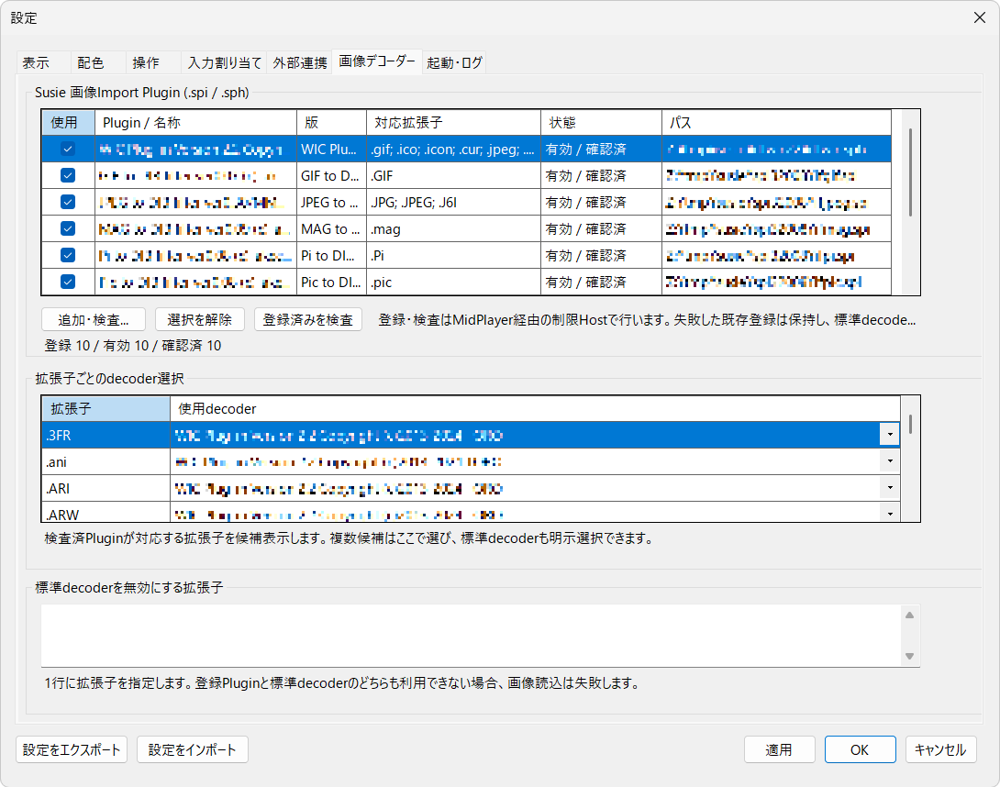

Setup Roadmap
導入ロードマップ
.NET 10 Desktop Runtime x64が導入済みの環境では、以下の3ステップでMidFDを使い始められます。32bit Susie SPIプラグインを使う場合はx86 Runtimeも追加してください。未導入の場合は、起動時の案内またはMicrosoft公式ページからRuntimeを追加してください。
Runtime導入済みなら3ステップ
まずは配布元ページより、通常起動用のZIPファイルをダウンロードします。
※Source code (zip) は開発用ソース一式のため、通常の起動には使用できません。ダウンロードしたZIPファイルを右クリックしてすべて展開（解凍）します。迷ったら「ドキュメント」や任意の作業フォルダー等へ配置してください。
※書き込みエラーを避けるため、Program Files 等のシステム保護領域以外を推奨します。
展開フォルダー内の MidFD.exe を起動します。初回セットアップで機能範囲を選択します。選択肢は「基本機能のみ」「便利機能まで使う（PracticalStable／推奨）」「すべての機能を使う（Full）」の3段階です。操作方式は「MidFD標準」または「FD／WinFD互換」から選べます。
うまく起動しない場合
上記の手順で起動できなかった場合は、以下の症状に合わせて対処してください。
「.NET Runtime が見つからない」という警告が出て起動しない状態。
.NET 10 Desktop Runtime x64 をインストールします。起動時にRuntime不足の案内が表示された場合は画面内の案内に従うか、Microsoft公式ページから「x64版」を取得してください。32bit Susie SPIプラグインを使用する場合は、同じページから「x86版」も追加します。
（または
winget install Microsoft.DotNet.DesktopRuntime.10 を実行）
Windows SmartScreen やウイルス対策ソフトによって起動が一時ブロックされる状態。
起動ファイル MidFD.exe が見当たらず、ソースコードのフォルダーやファイルだけが入っている状態。
Source code zip を取得した可能性があります。配布ページのダウンロードエリアに戻り、通常版の MidFD-win-x64.zip をダウンロードし直してください。
外部ツール・外部エディタ連携の設定方法
7-Zip、音声の外部再生に使う ffplay、外部テキストエディタ等は、初回起動後に必要に応じて連携できます。
Browserの動画Enter／Ctrl+Enterは内蔵MidPlayer（Media Foundation）で再生します。動画再生に ffmpeg／ffplay／ffprobe の登録は不要です。ffplayは対応音声の外部再生に使い、未検出時はWindowsの関連付けを使います。ripgrep 15.2.0は配布ZIPに同梱されています。
旧バージョンから更新する場合
旧QuickAccessのCommandsは新しい外部ツール登録へ自動移行されません。現行版は旧項目を読み込まず、通常保存時にquickaccess.jsonへ再出力しません。
更新前にMidFDを終了し、MidFD.exeと同じフォルダーにあるquickaccess.jsonを別の場所へコピーしてください。継続利用する外部ツールの登録内容も控えておきます。
更新後、必要な外部ツールを設定の「外部連携」へ登録してください。旧Commandsの自動移行・復元はありません。
Susie画像プラグイン（32bit SPI／64bit SPH）
Susie画像プラグインを別途用意し、MidFDの設定から登録します。対応する画像形式と読み込み可否は、プラグインや画像形式によって異なります。
- 使用するSusie画像プラグイン（
.spiまたは.sph）を用意します。 - MidFDの設定を開きます。
- 「画像デコーダー」タブを選びます。
- 「追加・検査...」を押します。
- 用意した
.spi／.sphファイルを選びます。 - 一覧でプラグイン名、対応拡張子、状態を確認します。
- 使用するプラグインの「使用」をONにします。
- 同じ拡張子に複数候補がある場合は、「拡張子ごとのdecoder選択」で使用先を指定します。
- 設定を保存します。
- 対応画像をBrowserで選び、Enterで表示を確認します。
「登録済みを検査」は、すでに登録しているプラグインをもう一度検査するときに使います。

bit数とRuntime: .spiはx86／32bit、.sphはx64／64bitのプラグインです。MidFDには.NET 10 Desktop Runtime x64が必要で、32bitの.spiを使う場合はx86 Runtimeも追加します。64bitの.sphを使う場合、追加のx86 Runtimeは不要です。
画像形式: プラグインの登録・検査が成功しても、すべての画像を読み込めるとは限りません。8-bit BI_RGBは画像データのpixel形式であり、プラグインの32／64bitとは別の情報です。RLE8など他の圧縮形式の対応は保証されません。
Next Step
操作キーを確認しましょう
基本となるキー操作やMark、MidFD標準・FD／WinFD互換ごとのFキー割り当て一覧をまとめたキー操作リファレンスです。